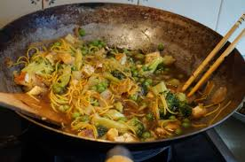
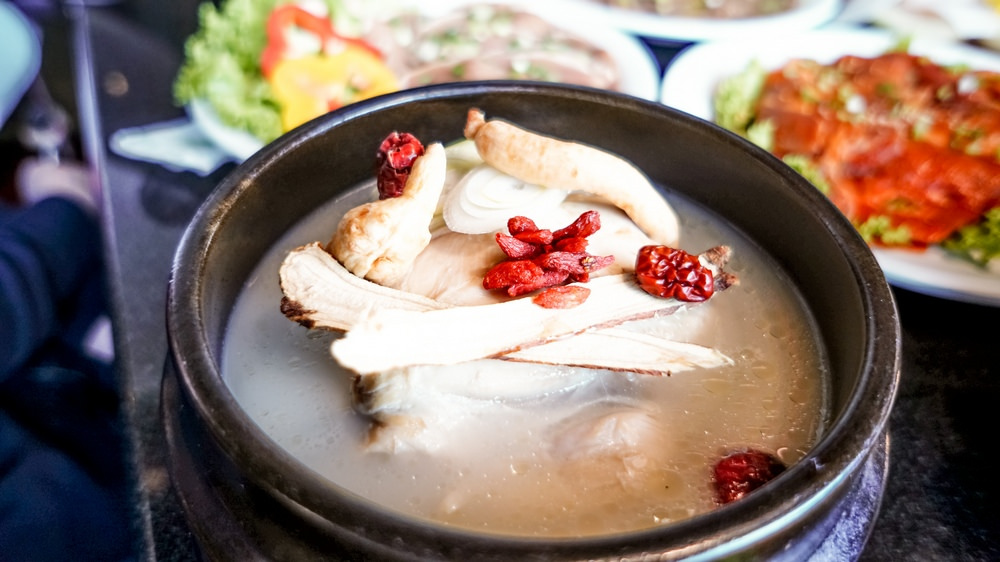
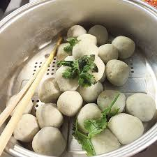
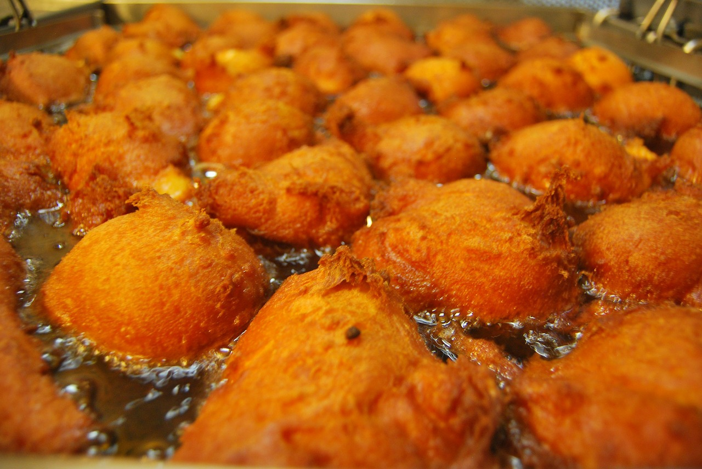
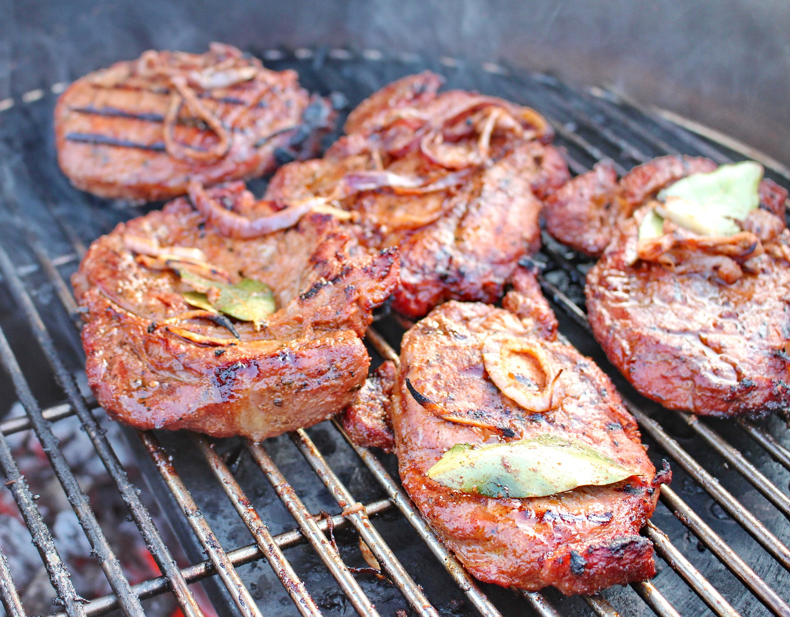
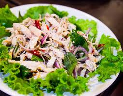

Cooking methods
Thai cooking is very simple. Its flavour come mainly from the skilful manupulation of certain essential ingredients such as Thai basil, chillies, coriander, ginger, coconut cream, garlic, onions, shallots, lemon grass, fish sauce and soy sauce. In most dishes, very little oil is used and the ingredients are lightly cooked to retain their crunchiness and natural flavour. The main methods of Thai cooking are described below:
- STIR-FRYING [pad]
- Stir-frying is a quick and fuss-free method of cooking. If you do not have a wok, a large frying pan (skillet) will suffice. Ensure that the wok is hot before adding in the cooking oil. Allow the cooking oil to heat up before adding in your ingredients. Stir them around quidkly with a spatula to heat them through. Once the food is cooked, dish out and serve hot. Because the stir-frying process is so quick, you need to have all the ingredients prepared and on hand before heating up the wok. This will ensure that ingredients do not overcook or burn as you are busy with the other ingredients. Cooking Tip : when stir-frying seafood, toss it quickly to cook. This will seal in the juices without overcooking the seafood. Overcooked seafood will be tough.
- STEWING [toon]
- Stewing helps to retain all the nutritional goodness and sweetness of the ingredients in the stewing liquied. Tougher cuts of meat can also be used as the cooking process will render them tender. To stew food, the ingredients are usually cut into pieces of similar size and placed into enough luquid to cover them completely. The pot is covered and placed over low heat so the ingredients cook slowly. The stewing liquid is sometimes served as it is to accompany the dish, but it may also be reduced or thickened into gravy.
- STEAMING [neung]
- In steaming, the ingredients are cooked by the vapour that rises from the boiling liquid below. As the ingredients do not come in direct contact with the liquid, most of the nutrients are retained, making this a healthy means of cooking food. To get the best results out of steaming food, always use the freshest ingredients. To steam food, place the ingredients in a heat proof (flameproof) plate or container and place over boiling liquid. Cover thightly with a lid to keep the steam in.
- DEEP FRYING [tod]
- This is a method where food is cooked in a large amount of cookng oil, deep enough to cover it completely. Deep-frying can be done in a wok or in a deep pan. Fill the oil halfway up the wok or pan so that any splattering will be contained. The temperature of the coking oil is very important when deep-frying. If not hot enough, the food will absorb all the oil and be greasy; but if too hot, the food will burn. The optimum temperature for deep-frying is at 180C (350F). Have on hand a wire strainer or tongs to remove the deep-fried food from the oil once it is ready. Drain on absorbent paper to remove excess oil. This will also help the food to stay crisp longer.
- GRILLING [yang]
- Grilling is done by setting food above or below a heat source to cook it. This can be done over hot coals/charcoal, under the electric grill, in the oven or even on the top of the stove using a heavy-based pan. In Thai cooking, meats are exposed directly to the heat, or wrapped in leaves and/or aluminum foil. Screwpine (pandan) leaves and banana leaves are commonly used as they impart a lovely fragrance to the cooked food. For successful grilling, the heat must be well-regulated so the food does not burn or blacken on the outside too reaily while remaining raw on the inside.
- SALADS [yum]
- The outstanding features of Thai salad are the strong taste and the freshness of the ingredients used. The tastiness includes sourness, saltiness, and hotness. As for the sweetness, it is added only to improve the flavor. The hot taste helps making the dish more delectable. The taste of the salad dressings depends upon the diners. Chilies can be omitted from dressings if desired. The sour taste can also be adjusted as desired. Most of the ingredients used, whether meat or vegetables, are usually cut into small pieces and blanched. Special care must be taken when mixing the salads to avoid bruising the vegetables. Salads must be eaten immediately after the dressings are mixed in.